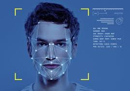

Languages: Python Libraries/Frameworks: OpenCV, TensorFlow/Keras, Dlib, NumPy Tools: Jupyter Notebook, VS Code
Key Features:1. Face Detection: Detects human faces from webcam or image input using Haar cascades or a deep learning model (e.g., SSD/MTCNN).
2. Age Prediction:Predicts age range using a pre-trained CNN model trained on datasets like IMDB-WIKI or Adience.
Classifies gender (Male/Female) based on facial features.
Recognizes and labels known individuals using face embeddings (like FaceNet or Dlib's face recognition model).
1. Capture face from webcam/image
2. Preprocess the face image
3. Feed into trained models for:
Age prediction
Gender prediction
Identity recognition
Handling low-light or blurred images Improving accuracy of age prediction Collecting diverse face data for training/validation
Outcome:Achieved good accuracy in age and gender classification Successfully recognized known faces with a good match rate Learned practical skills in computer vision, CNNs, and real-time image processing
---